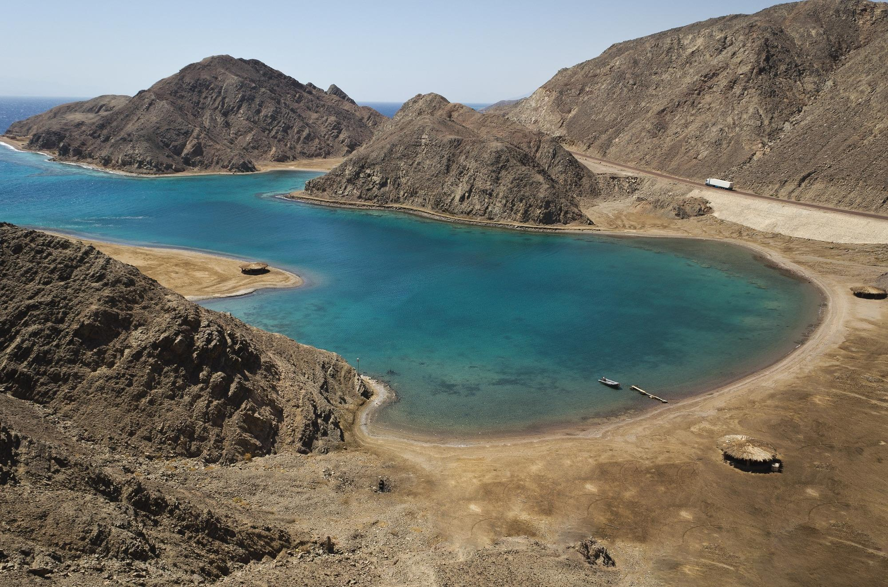
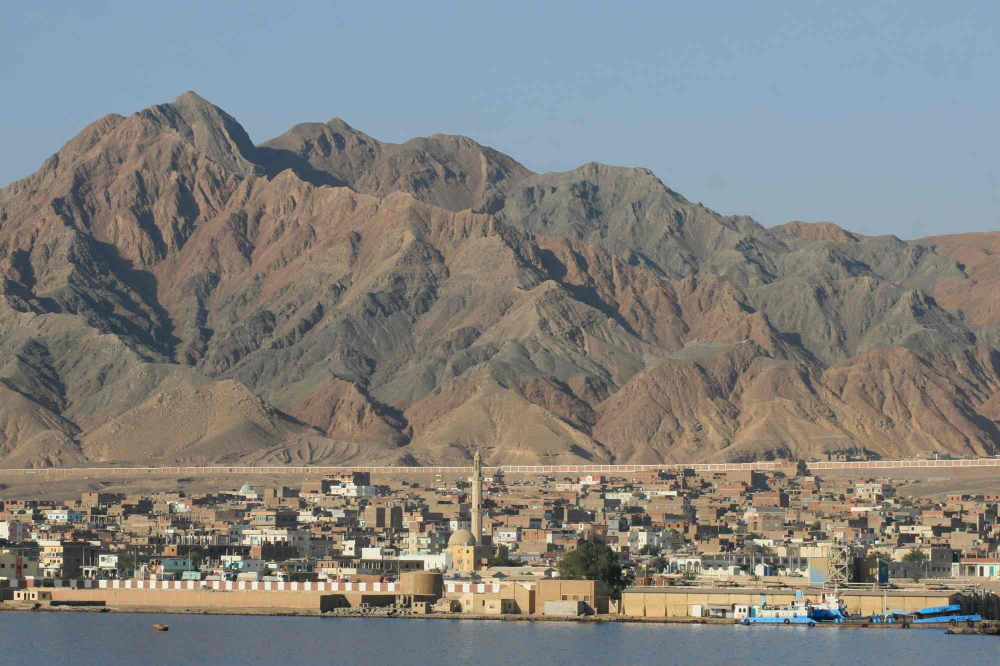
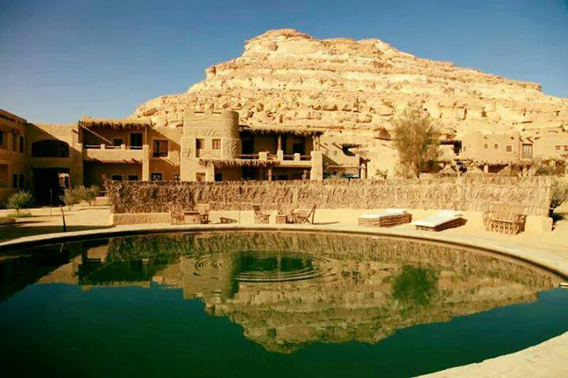
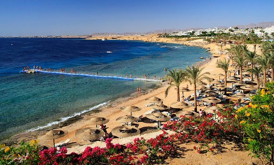

مواسم السياحة العلاجية في مصر
فصلي الخريف و الربيع حيث اعتدال الجو في هذين الفصلين مما يؤدي الي الاستفادة القصوي من فوائد المناخ وتأثيره علي عناصر السياحة العلاجية في مصر

مصر اشتُهرت مِصر منذ القدم بالسّياحة العلاجيّة لما بها من عيونٍ وأنهارٍ ومياه جوفيةٍ ومعدنيةٍ، وبسبب تربتها التّي تحتوي على العديدِ من المواد المعالجةِ للعديد من الأمراض، فتوجد في مصر العديد من العيون الكبريتية التّي تحتوي على الكثير من المعادن الكيميائية الفريدة، والتّي تفوق بها نسبةُ المعادن جميع العيون الكبريتية في العالم، كما تتوفر الطّينة العلاجية حول العيون الكبريتية والتّي تساعد على علاج العديد من أمراض العظام كالرّوماتيزم، والجهاز التّنفسي، والأمراض الجلدية.
توجد في مصر أيضاً العديد من العيون الأخرى العلاجية؛ كحلوان، والعين السّحنة، وعين الصّيرة، والفيوم، والغردقة، وسفاجا، وأسوان، وغيرها الكثير من العيون التّي تشتهر برملها الأسودِ المعالج للعديد من الأمراض الجلدية. أثبتت العَديد من الدّراسات احتواء الكثبان الرّملية التّي تتواجد في الصّحراء المصرية على بعض العناصر المشّعة التّي تساعد على علاج مرض الرّوماتويد، وأمراض العمود الفقري، والعديد من الآلام الحادة، فيمكن طمر الجسمِ بالكثبان الرّملية للشعورِ بالرّاحة الكاملة.
تعد الينابيع المعدنية عامل جذب قوي للسياحة الاستشفائية وهي عبارة عن مياه متدفقة علي هيئة ينبوع تكتسب خصائصها الكيميائية والاستشفائية من خلال طبيعة الصخور التي تمر بها حيث تساعد في علاج امراض الروماتيزم والارتشاح المفصلي وعلاج الصدفية للتعرف علي فنادق السياحة العلاجية
وتستخدم عن طريق طمر الجسم لتسخين العظام حتي لبها من الداخل و تحتوي الرمال السوداء على 3 مواد مشعة غير ضارة وهي: (اليورانيوم والثوريوم، والبوتاسيوم)، ونظرا لاحتوائها على كمية مرتفعة من أملاح الذهب تستخدم في علاج أمراض الروماتويد والارتشاح المفصلي، وعلاج الصدفية والامراض العصبية وشلل الاطفال للتعرف علي فنادق السياحة العلاجية
يتكون الطمي العلاجي في برك العيون المعدنية وتكون له خواص علاجية تشفي العديد من الامراض مثل: امراض العظام وامراض الجهاز التنفسي والامراض الجلدية وغيرها وهذا الطمي الماخوذ من العلاج يستخدم في نوع من الحمامات يسمي بحمامات فانجو وفيه يستعمل الطمي دافئا بعد تسخينه او باردا للتعرف علي فنادق السياحة العلاجية
وهو يعتمد علي الاستحمام في مياه البحر او التعرض لهواء البحر ويستخدم كل العناصر المفيدة في البيئة البحرية مثل المناخ ومياه البحر وطينة البحر واعشاب البحر الي غير ذلك من الثروات البحرية. للتعرف علي فنادق السياحة العلاجية
يعتمد علي درجة الحرارة ونسبة الرطوبة والضغط الجوي والضوء ، ويعرف بانة قدرة الظروف المناخية المثالية علي علاج الامراض مثل الاستحمام في المياه ثم التعرض لاشعة الشمس وتعرف بحمامات الشمس واصبح العلاج بالمناخ مفيد جدا خاصة لعلاج امراض مقل الصدفية والتهابات المفاصل. للتعرف علي فنادق السياحة العلاجية
فصلي الخريف و الربيع حيث اعتدال الجو في هذين الفصلين مما يؤدي الي الاستفادة القصوي من فوائد المناخ وتأثيره علي عناصر السياحة العلاجية في مصر
يتم علاج اي حالة في خلال ثلاثة جلسات بحد اقصى سبع جلسات مع العلم ان الجسم لايستفيد بزايدة عدد الجلسات
، وتكون مدة الجلسة الواحدة 15 دقيقة لا أكثر. للتعرف علي فنادق السياحة العلاجية